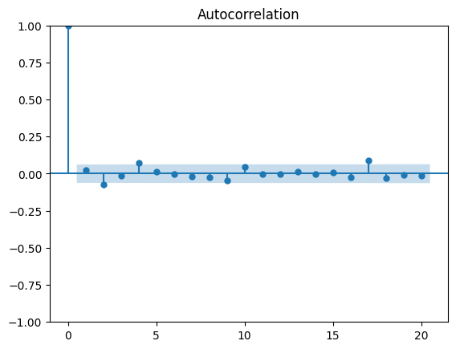

Time series exist in a variety of fields from meteorology to finance, econometrics, and marketing. By recording data and analyzing it, we can study time series to analyze industrial processes or track business metrics, such as sales or engagement. Also, with large amounts of data available, data scientists can apply their expertise to techniques for time series forecasting.
You will first learn how to make simple forecasts that will serve as benchmarks for more complex models. Then we will use two statistical learning techniques, the moving average model and the autoregressive model, to make forecasts. These will serve as the foundation for the more complex modeling techniques we will cover that will allow us to account for non-stationarity, seasonality effects, and the impact of exogenous variables. Afterwards, we’ll switch from statistical learning techniques to deep learning meth- ods, in order to forecast very large time series with a high dimensionality, a sce- nario in which statistical learning often does not perform as well as its deep learning counterpart.
Time Series Definition
A time series is a set of data points ordered in time. The data is equally spaced in time, meaning that it was recorded at every hour, min- ute, month, or quarter. Typical examples of time series include the closing value of a stock, a household’s electricity consumption, or the temperature outside.
What makes time series forecasting different from other regression tasks?
Temporal ordering: Time series have an order and the order of the observations matters. You can’t just treat the data as independent and identically distributed (i.i.d.) because the temporal ordering of the data matters.
Time series sometimes do not have features: With time series, it is quite common to be given a simple dataset with a time column and a value at that point in time. Without any other features, we must learn ways of using past values of the time series to forecast future values.
Speciality of time series forecasting:
Seasonality: Many time series exhibit seasonality. For example, the number of airline passengers increases during the summer and decreases during the winter.
Trends: Many time series exhibit trends. For example, the number of airline passengers has generally increased over time.
Non-stationarity: Many time series are non-stationary. This means that the statistical properties of the time series, such as the mean or variance, change over time. For example, the number of airline passengers has generally increased over time, so the mean number of passengers is not constant.
The random walk process
A random walk is a process in which there is an equal chance of going up or down by a random number. Random walks often expose long periods where a positive or negative trend can be observed. They are also often accompanied by sudden changes in direction.
This is usually observed in financial and economic data, like the daily closing price of GOOGL.
In a random walk process, we say that the present value \(y_t\) is a function of the value at the previous timestep \(y_{t –1}\), a constant C, and a random number \(ε_t\) , also termed white noise. Here, \(ε_t\) is the realization of the standard normal distribution, which has a variance of 1 and a mean of 0. Therefore, we can write the random walk process as:
\[y_t = C + y_{t-1} + ε_t\]
How to indentify a random walk process?
A random walk is a series whose first difference is stationary and uncorrelated. This means that the process moves completely at random.
How to test for stionarity
💡 Augmented Dickey-Fuller (ADF) test
The augmented Dickey-Fuller (ADF) test helps us determine if a time series is stationary by testing for the presence of a unit root. If a unit root is present, the time series is not stationary.
The null hypothesis states that a unit root is present, meaning that our time series is not stationary.
import numpy as npimport matplotlib.pyplot as pltfrom statsmodels.tsa.stattools import adfullerfrom statsmodels.graphics.tsaplots import plot_acfsteps = np.random.standard_normal(1000)steps[0]=0random_walk = np.cumsum(steps)fig, ax = plt.subplots()ax.plot(random_walk)ax.set_xlabel('Timesteps')ax.set_ylabel('Value')plt.tight_layout()ad_fuller_result = adfuller(random_walk) # test for stationaryprint(f'ADF Statistic: {ad_fuller_result[0]}')print(f'p-value: {ad_fuller_result[1]}')
The ADF statistic is not a large negative number, and with a p-value greater than 0.05, we cannot reject the null hypothesis stating that our time series is not stationary. We can further support our conclusion by plotting the ACF function.
plot_acf(random_walk, lags=20);
The autocorrelation coefficients slowly decrease as the lag increases, which is a clear indicator that our random walk is not a stationary process. The shaded area represents a confidence interval. If a point is within the shaded area, then it is not significantly different from 0. Otherwise, the autocor- relation coefficient is significant.
Because our random walk is not stationary, we need to apply a transformation to make it stationary in order to retrieve useful information from the ACF plot. Since our sequence mostly displays changes in the trend without seasonal patterns, we will apply a first-order differencing to our time series.
This time the ADF statistic is a large negative number, and the p-value is less than 0.05. Therefore, we reject the null hypothesis, and we can say that this process has no unit root and is thus stationary.
plot_acf(diff_random_walk, lags=20);

You’ll notice that there are no significant autocorrelation coefficients after lag 0. This means that the stationary process is completely random and can therefore be described as white noise. Each value is simply a random step away from the previous one, with no relation between them.
Time series decomposition
Time series decomposition is a statistical task that separates the time series into its three main components: a trend component, a seasonal component, and the residuals.
The trend component represents the long-term change in the time series. This component is responsible for time series that increase or decrease over time.
The seasonal component is the periodic pattern in the time series. It represents repeated fluctuations that occur over a fixed period of time.
Finally, the residuals, or the noise, express any irregularity that cannot be explained by the trend or the seasonal component.
We will take a look at real world dataset. The Airline Passengers dataset describes the total number of airline passengers over a period of time. The units are a count of the number of airline passengers in thousands. There are 144 monthly observations from 1949 to 1960.
A moving average process, or the moving average (MA) model, states that the current value is linearly dependent on the current and past error terms. The error terms are assumed to be mutually independent and normally distributed, just like white noise.
A moving average model is denoted as \(MA(q)\), where \(q\) is the order. The model expresses the present value as a linear combination of the mean of the series \(\mu\), the present error term \(\epsilon_t\), and past error terms \(\epsilon_t - q\). The magnitude of the impact of past errors on the present value is quantified using a coefficient denoted as \(\theta_q\).
An autoregressive process establishes that the output variable depends linearly on its own previous values. In other words, it is a regression of the variable against itself.
An autoregressive process is denoted as an \(AR(p)\) process, where p is the order. In such a process, the present value \(y_t\) is a linear combination of a constant \(C\), the present error term \(\epsilon_t\), which is also white noise, and the past values of the series \(y_t–p\). The magnitude of the influence of the past values on the present value is denoted as \(\phi_p\), which represents the coefficients of the \(AR(p)\) model.
Similar to the moving average process, the order \(p\) of an autoregressive process determines the number of past values that affect the present value
Autoregressive
Autoregressive Moving Average (ARMA) Process
The autoregressive moving average process is a combination of the autoregressive process and the moving average process. It states that the present value is linearly dependent on its own previous values and a constant, just like in an autoregressive process, as well as on the mean of the series, the current error term, and past error terms, like in a moving average process.
The \(\text{ARMA(p, q)}\) model consists of two types of lagged values, one for the autoregressive component and the other for the moving average component. The first parameter \(p\) indicate the order of the autoregression, and the second \(q\) the order of the moving average
Understanding the Akaike information criterion (AIC)
The AIC estimates the quality of a model relative to other models. Given that there will be some information lost when a model is fitted to the data, the AIC quantifies the relative amount of information lost by the model. The less information lost, the lower the AIC value and the better the model. The AIC is calculated as follows:
\[AIC = 2k - 2ln(\hat{L})\]
where k is the number of parameters in the model and \(\hat{L}\) is the maximum value of the likelihood function for the model.
Understanding residual analysis
Residual analysis is a statistical technique used to assess the quality of a model. It is used to determine whether the assumptions of the model are valid and to identify any patterns in the residuals. The residuals are the differences between the observed values and the predicted values.
The residuals should be normally distributed, with a mean of 0 and a constant variance. If the residuals are not normally distributed, then the model is not capturing all the information in the data. If the residuals have a mean different from 0, then the model is biased. If the variance of the residuals is not constant, then the model is not capturing all the information in the data.
The first step in residual analysis is to plot the quantile-quantile (Q-Q) plot of the residuals. The Q-Q plot is a graphical tool used to compare the distribution of the residuals to the normal distribution. If the residuals are normally distributed, the points in the Q-Q plot will fall on a straight line. If the residuals are not normally distributed, the points will deviate from the straight line.
The second step is to determinate if the residuals are uncorrelated. We will use the Ljung-Box test to determine if the residuals are uncorrelated. The null hypothesis of the Ljung-Box test is that the data is independently distributed, meaning that there is no autocorrelation. If the p-value of the Ljung-Box test is less than 0.05, then we reject the null hypothesis and conclude that the residuals are correlated.
Autoregressive Integrated Moving Average (ARIMA) Process
So far, we have seen the autoregressive process, the moving average process, and the autoregressive moving average process. These models can only be applied to stationary time series, which required us to apply transformations, mainly differencing, and test for stationarity using the ADF test. The forecasts from each model returned differenced values, which we had to reverse to obtain the original values.
The autoregressive integrated moving average process, or ARIMA, is a generalization of the autoregressive moving average process that can be applied to non-stationary time series. Using this model, we can take into account non-stationary time series and avoid the steps of modeling on differenced data and having to inverse transform the forecasts.
The ARIMA model is denoted as ARIMA(p, d, q), where p is the order of the autoregressive component AR(p), d is the degree of differencing, and q is the order of the moving average component MA(q).
where \(y'_t\) is the differenced time series, and \(\epsilon'_t\) is the differenced error term.
In simple terms, the ARIMA model is simply an ARMA model that can be applied on non-stationary time series.
ARIMA
Seasonal Autoregressive Integrated Moving Average (SARIMA) Process
\(\text{SARIMA(p,d,q)}(P,D,Q)_m\) model expands on the ARIMA(p,d,q) model by adding seasonal parameters, where P is the order of the seasonal AR(P) process, D is the seasonal order of integration, Q is the order of the seasonal MA(Q) process, and m is the frequency, or the number of observations per seasonal cycle.
Note that a \(\text{SARIMA(p,d,q)}(0,0,0)_m\) model is equivalent to an ARIMA(p,d,q) model.
The parameter m stands for the frequency, the number of observations per cycle. For data that was recorded every year, quarter, month, or week, the length of a cycle is considered to be 1 year. If the data was recorded annually, m = 1 since there is only one observation per year. If the data was recorded quarterly, m = 4 since there are four quarters in a year, and therefore four observations per year. Daily data can have a weekly seasonality. In that case, the frequency is m = 7 because there would be seven observations in a full cycle of 1 week. It could also have a yearly seasonality, meaning that m = 365. Thus, you can see that daily and sub-daily data can have a different cycle length, and therefore a different frequency m.
SARIMA
SARIMA with external variables (SARIMAX)
Each model that we have explored and used to produce forecasts has considered only the time series itself. In other words, past values of the time series were used as predictors of future values. However, it is possible that external variables also have an impact on our time series and can therefore be good predictors of future values.
The SARIMAX model simply adds a linear combination of exogenous variables to the SARIMA model. This allows us to model the impact of external variables on the future value of a time series.
Recall that the SARIMAX model uses the \(\text{SARIMA(p,d,q)}(P,D,Q)_m\) **model and a linear combination of exogenous variables to predict one timestep into the future. But what if you wish to predict two timesteps into the future? While this is possible with a SARIMA model, the SARIMAX model requires us to forecast the exogenous variables too.
it can be forecast using a version of the SARIMA model. Nevertheless, we know that our forecast always has some error associated with it. Therefore, having to forecast an exogenous variable to forecast our target variable can magnify the prediction error of our target, meaning that our predictions can quickly degrade as we predict more timesteps into the future.
→ The only way to avoid that situation is to predict only one timestep into the future and wait to observe the exogenous variable before predicting the target for another timestep into the future.
Vector AutoRegression (VAR) model
With the SARIMAX model, the relationship is unidirectional: we assume that the exogenous variable has an impact on the target only.
However, it is possible that two time series have a bidirectional relationship, meaning that time series t1 is a predictor of time series t2, and time series t2 is also a predictor for time series t1. In such a case, it would be useful to have a model that can take this bidirectional relationship into account and output predictions for both time series simultaneously.
→ Vector AutoRegression (VAR) allows us to capture the relationship between multiple time series as they change over time. That, in turn, allows us to produce forecasts for many time series simultaneously, therefore performing multivariate forecasting.
The VAR(p) model can be seen as a generalization of the AR(p) model that allows for multiple time series. Just like in the AR(p) model, the order p of the VAR(p) model determines how many lagged values impact the present value of a series. In this model, however, we also include lagged values of other time series.
For two time series, the general equation for the VAR(p) model is a linear combination of a vector of constants, past values of both time series, and a vector of error terms:
where \(y_{1,t}\) and \(y_{2,t}\) are the two time series, \(A_{ij}\) are the coefficients of the autoregressive model, and \(\epsilon_{t}\) is the error term.
Some importants points to take into account when using VAR model: - the time series must be stationary to apply the VAR model. - each time series has an impact on another. - it is important to test if whether past values of a time series are statistically significant in forecasting another time series -> Granger causality test.
VAR
Prophet
Prophet is a forecasting tool developed by Facebook. It is designed for forecasting time series data that display patterns on different time scales, such as yearly, weekly, and daily. It is based on an additive model where non-linear trends are fit with yearly, weekly, and daily seasonality, plus holiday effects. It works best with time series that have strong seasonal effects and several seasons of historical data. Prophet is robust to missing data and shifts in the trend, and typically handles outliers well.
Under the hood, Prophet implements a general additive model where each time series \(y(t)\) is modeled as the linear combination of a trend \(g(t)\), a seasonal component \(s(t)\), holiday effects \(h(t)\), and an error term \(\epsilon_t\), which is normally distributed.
\[y(t) = g(t) + s(t) + h(t) + \epsilon_t\]
The trend component models the non-periodic long-term changes in the time series.
The seasonal component models the periodic change, whether it is yearly, monthly, or weekly, or daily. The holiday effect occurs irregularly and potentially on more than one day. Finally, the error term represents any change in value that cannot be explained by the previous three components.
Seasonal periods
The inclusion of multiple seasonal periods was motivated by the observation that human behavior produced multi-period seasonal time series. For example, the five day work week can produce a pattern that repeats every week, while school break can produce a pattern that repeats every year.
Thus, to take multiple seasonal periods into account, Prophet uses the Fourier series to model multiple periodic effects.
N is simply the number of parameters we wish to use to estimate the seasonal component. The larger the value of N, the more complex the seasonal component will be.
if we have a yearly seasonality, P = 365.25, as there are 365.25 days in a year. For a weekly seasonality, P = 7
Holidays effect
Holidays are irregular events that can have a clear impact on a time series.
events such as Black Friday in the United States can dramatically increase the attendance in stores or the sales on an ecommerce website
Valentine’s Day is probably a strong indicator of an increase in sales of chocolates and flowers
Prophet lets us define a list of holidays for a specific country. Holiday effects are then incorporated in the model, assuming that they are all independent. If a data point falls on a holiday date, a parameter \(K_i\) is calculated to represent the change in the time series at that point in time. The larger the change, the greater the holiday effect.
If you want to deep dive into Prophet, check the official repo
Deep learning
When to use deep learning for time series forecasting?
Deep learning shines when we have large complex datasets (supposed to have more than 10K data points). In those situations, deep learning can leverage all the available data to infer relationships between each feature and the target, usually resulting in good forecasts.
When we have a large enough dataset, a statistical model with take a long time to fit and forecast. In such a case, deep learning can be a good alternative.
When the dataset has a non-linear relationship between the features and the target, we should consider using deep learning.
When the data has multiple seasonal periods (hourly, daily, weekly, monthly, yearly), a SARIMAX model cannot be used. In such a case, deep learning should be considered.
Multilayer Perceptron (MLP)
The most basic deep learning model is the multilayer perceptron (MLP). It is a feedforward neural network that consists of an input layer, one or more hidden layers, and an output layer. The input layer takes the features of the dataset, and the output layer returns the forecast. The hidden layers are responsible for learning the relationships between the features and the target.
In case of time series forecasting, the input layer takes the past values of the time series, and the output layer returns the forecast for the next value of the time series. The hidden layers are responsible for learning the relationships between the past values of the time series and the future value.
The recurrent neural network (RNN) is a type of neural network that is well-suited for time series forecasting. It is designed to take into account the sequential nature of time series data. The RNN has a feedback loop that allows information to be passed from one step of the network to the next. This feedback loop allows the RNN to take into account the past values of the time series when making a forecast.
The RNN is composed of a cell that takes the input and the hidden state from the previous timestep and returns the output and the hidden state for the current timestep. The hidden state is then passed to the next timestep, and so on. The output of the RNN is the forecast for the next value of the time series. There are many types of RNN cells, such as the simple RNN cell, the long short-term memory (LSTM) cell, and the gated recurrent unit (GRU) cell.
A convolutional neural network is a deep learning architecture that makes use of convolutional operation. The convolution operation allows the network to create a reduced set of features. Therefore, it is a way of regularizing the network, preventing overfitting, and effectively filtering the inputs.
The convolution is performed with a kernel, which is also trained during model fitting. The stride of the kernel determines the number of steps it shifts at each step of the convolution. In time series forecasting, only 1D convolution is used. To avoid reducing the feature space too quickly, we can use padding, which adds zeros before and after the input vector. This keeps the output dimension the same as the original feature vector, allowing us to stack more convolution layers, which in turn allows the network to process the features for a longer time.
A 1D convolutional network takes as input a 3-dimensional tensor and also outputs a 3-dimensional tensor. The input tensor of our TCN implementation has the shape (batch_size, input_length, input_size) and the output tensor has the shape (batch_size, input_length, output_size). Since every layer in a TCN has the same input and output length, only the third dimension of the input and output tensors differs. In the univariate case, input_size and output_size will both be equal to one. In the more general multivariate case, input_size and output_size might differ since we might not want to forecast every component of the input sequence.
One single 1D convolutional layer receives an input tensor of shape (batch_size, input_length, nr_input_channels) and outputs a tensor of shape (batch_size, input_length, nr_output_channels)
TCN consists of dilated, causal 1D convolutional layers with the same input and output lengths.
Advantages of TCN: - TCNs exhibit longer memory than recurrent architectures with the same capacity. - Performs better than LSTM/GRU on long time series (Seq. MNIST, Adding Problem, Copy Memory, Word-level PTB…). - Parallelism (convolutional layers), flexible receptive field size (how far the model can see), stable gradients (compared to backpropagation through time, vanishing gradients)…
A disadvantage of this basic design is that in order to achieve a long effective history size, we need an extremely deep network or very large filters.
TCN
Transformer
The transformer architecture was introduced in the paper “Attention is All You Need†by Vaswani et al. in 2017. It is a deep learning architecture that is based on the self-attention mechanism. The self-attention mechanism allows the network to weigh the importance of each input feature when making a prediction.
Transformers introduced two building blocks – multi-head attention and positional embeddings. Rather than working sequentially, sequences are processed as a whole rather than item by item. They employ self-attention, where similarity scores between items in a sentence are stored.
NeuralProphet
NeuralProphet is a framework for interpretable time series forecasting. NeuralProphet is built on PyTorch and combines Neural Networks and traditional time-series algorithms, inspired by Facebook Prophet and AR-Net.
Reference
Time Series Forecasting in Python by Marco Peixeiro
Machine Learning for Time Series with Python By Ben Auffarth